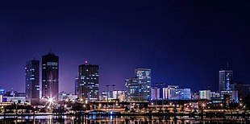

Economy of Ivory Coast
|  | |
| Currency | West African CFA franc (XOF, CFA) |
|---|---|
| 655.957 CFA francs per euro | |
| Calendar year | |
Trade organisations | AU, AfCFTA, WTO, ECOWAS, WAEMU |
Country group |
|
| Statistics | |
| Population | |
| GDP | |
| GDP rank | |
GDP growth |
|
GDP per capita | |
GDP per capita rank | |
GDP by sector |
|
| 2.0% (2020 est.)[6] | |
Population below poverty line | |
| 41.5 medium (2015)[9] | |
Labour force | |
Labour force by occupation | agriculture: 68% (2007 est.)[5] |
| Unemployment | 9.4% (2013 est.)[5] |
Main industries | foodstuffs, beverages; wood products, oil refining, gold mining, truck and bus assembly, textiles, fertilizer, building materials, electricity |
| External | |
| Exports | |
Export goods | cocoa beans, gold, rubber, refined petroleum, crude petroleum |
Main export partners |
|
| Imports | |
Import goods | crude petroleum, rice, frozen fish, refined petroleum, packaged medicines |
Main import partners | |
FDI stock | |
Gross external debt | |
| Public finances | |
| −4.2% (of GDP) (2017 est.)[5] | |
| Revenues | 7.749 billion (2017 est.)[5] |
| Expenses | 9.464 billion (2017 est.)[5] |
| Economic aid | recipient: ODA, $1 billion (1996 est.) |
All values, unless otherwise stated, are in US dollars. | |
{kind=link}
The economy of Ivory Coast is stable and currently growing, in the aftermath of political instability in recent decades. The Ivory Coast's economy is largely market-based and depends heavily on the agricultural sector. Almost 70% of the Ivorian people are engaged in some form of agricultural activity.[19] The economy grew 82% in the 1960s, reaching a peak growth of 360% in the 1970s, but this proved unsustainable and it shrank by 28% in the 1980s and a further 22% in the 1990s. This decline, coupled with high population growth, resulted in a steady fall in living standards. The Gross national product per capita, now rising again, was about US$727 in 1996. It was substantially higher two decades before. Real GDP growth is expected to average 6.5% in 2024–25.
After several years of lagging performance, the Ivorian economy began a comeback in 1994, due to the devaluation of the CFA franc and improved prices for cocoa and coffee, growth in non-traditional primary exports such as pineapples and rubber, limited trade and banking liberalization, offshore oil and gas discoveries, and generous external financing and debt rescheduling by multilateral lenders and France.[20] The 50% devaluation of franc zone currencies on 12 January 1994 caused a one-time jump in the inflation rate to 26% in 1994, but the rate fell sharply from 1996–1999.[20] Moreover, government adherence to donor-mandated reforms led to a jump in growth to 5% annually in 1996–99.[20] A majority of the population remains dependent on smallholder cash crop production.[21]
History
[edit]This section is empty. You can help by adding to it. (September 2021) |
Infrastructure
[edit]By developing-country standards, Ivory Coast has an outstanding infrastructure.[21] There is a network of more than 13,000 kilometres (8,000 mi) of paved roads; modern telecommunications services, including a public data communications network; cellular phones and Internet access; two active ports, one of which, Abidjan, is the most modern in West Africa; rail links-in the process of being upgraded-both within the country and to Burkina Faso; regular air service within the region and to and from Europe; and real estate developments for commercial, industrial, retail, and residential use.[21] Ivory Coast's location and connections to neighboring countries makes it a preferred platform for foreigners to conduct West African business operations.[21] The city of Abidjan is one of the most modern and liveable cities in the region.[21]
The government's public investment plan accords priority to investment in human capital, but it also will provide for significant spending on the economic infrastructure needed to sustain growth.[21]
In the new environment of government disengagement from productive activities and in the wake of recent privatizations, anticipated investments in the petroleum, electricity, water, and telecommunications sectors, and in part of the transport sector, will be financed without any direct government intervention.[21]
Mean wages were $1.05 per man-hour in 2009.
Agriculture
[edit]Ivory Coast produced, in 2018:[22]
- 7.2 million tonnes of yam (3rd largest producer in the world, only behind Nigeria and Ghana);
- 5 million tons of cassava (14th largest producer in the world);
- 2.1 million tons of palm oil;
- 2.1 million tons of rice;
- 1.9 million tons of cocoa (largest producer in the world);
- 1.9 million tons of sugar cane;
- 1.8 million tons of plantain (8th largest producer in the world);
- 1 million tons of maize;
- 688 thousand tons of cashew nuts (3rd largest producer in the world, behind Vietnam and India);
- 461 thousand tons of natural rubber;
- 397 thousand tons of banana;
- 316 thousand tons of cotton;
In addition to smaller productions of other agricultural products, like coffee (88 thousand tons) and pineapple (50 thousand tons).[22]
Ivory Coast is among the world's largest producers and exporters of cocoa beans and palm oil.[20] Consequently, the economy is highly sensitive to fluctuations in international prices for these products and to weather conditions.[20] Despite attempts by the government to diversify the economy, it is still largely dependent on agriculture and related activities.[20] Forced labor by children bought and sold as slaves are endemic in cacao production.[23]
Energy
[edit]Côte d'Ivoire's energy supply relies on several hydroelectric stations and gas-to-power plants that make use of the country's hydraulic and natural gas resources. Over recent years, the country has also sought to develop its solar industry and is setting up several solar PV plants to diversify its energy mix. [24]
Côte d'Ivoire also holds oil and natural gas resources offshore, although production has remained small compared to other African neighbours such as Ghana or Nigeria. In 2021, it produced less than 25,000 barrels of oil per day (bopd).[25] However, recent discoveries[26] by Eni in 2021 and 2022 have given hope that production could rise in the near future.
Mining
[edit]In 2019, the country was the 9th largest world producer of manganese.[27]
In the production of gold, in 2017 the country produced 20.3 tons.[28]
Tourism
[edit]{kind=link}
Ivory Coast has made progress in diversifying its economy, and since the 1970s, has steadily expanded the facilities offered to tourists. Resort lodgings in coastal areas have been developed. There are numerous hotels in Abidjan, including international chains such as Novotel and Sofitel.
External trade and investment
[edit]{kind=link}
Foreign direct investment (FDI) plays a key role in the Ivorian economy, accounting for between 40% and 45% of total capital in Ivorian firms.[21] France is overwhelmingly the most important foreign investor.[21] In recent years[when?], French investment has accounted for about one-quarter of the total capital in Ivorian enterprises, and between 55% and 60% of the total stock of foreign investment capital.[21]
The stock market capitalisation of listed companies in Ivory Coast was $2,327 million in 2005 by the World Bank.[29]
Economic data
[edit]Main indicators
[edit]The following table shows the main economic indicators in 1980–2023.[30]
| Year | GDP (in billion US$ PPP) |
GDP per capita (in US$ PPP) |
GDP (in billion US$ nominal) |
GDP growth (real) | Inflation (in Percent) | Government debt (in % of GDP) |
|---|---|---|---|---|---|---|
| 1980 | 20.7 | 2,585 | 13.9 | 5.2% | 8.8% | ... |
| 1985 | 27.4 | 2,874 | 9.5 | 3.6% | 1.8% | ... |
| 1990 | 34.3 | 3,051 | 14.9 | −1.0% | −0.7% | ... |
| 1995 | 40.8 | 2,882 | 15.2 | 5.6% | 14.1% | ... |
| 2000 | 52.9 | 3,279 | 14.9 | −2.1% | 2.5% | 74% |
| 2005 | 59.3 | 3,235 | 23.6 | 1.7% | 3.9% | 58% |
| 2006 | 62.1 | 3,300 | 24.6 | 1.5% | 2.5% | 57% |
| 2007 | 64.9 | 3,361 | 28.2 | 1.8% | 1.9% | 53% |
| 2008 | 67.8 | 3,424 | 33.6 | 2.5% | 6.3% | 51% |
| 2009 | 70.5 | 3,468 | 33.7 | 3.3% | 1.0% | 46% |
| 2010 | 72.8 | 3,489 | 34.4 | 2.0% | 1.4% | 46% |
| 2011 | 70.7 | 3,303 | 35.5 | −4.2% | 4.9% | 50% |
| 2012 | 78.2 | 3,563 | 37.0 | 10.1% | 1.3% | 25% |
| 2013 | 86.4 | 3,834 | 43.2 | 9.3% | 2.6% | 25% |
| 2014 | 97.9 | 4,237 | 48.9 | 8.8% | 0.4% | 27% |
| 2015 | 108.1 | 4,558 | 45.8 | 8.8% | 1.2% | 29% |
| 2016 | 113.7 | 4,672 | 48.4 | 7.2% | 0.6% | 31% |
| 2017 | 120.2 | 4,814 | 52.5 | 7.4% | 0.6% | 33% |
| 2018 | 129.0 | 5,038 | 58.5 | 4.8% | 0.6% | 35% |
| 2019 | 139.9 | 5,324 | 59.9 | 6.5% | 0.8% | 38% |
| 2020 | 144.2 | 5,348 | 63.1 | 1.7% | 2.4% | 46% |
| 2021 | 161.2 | 5,828 | 71.8 | 7.0% | 4.2% | 51% |
| 2022 | 184.0 | 6,486 | 70.2 | 6.7% | 5.2% | 57% |
| 2023 | 202.6 | 6,960 | 79.4 | 6.2% | 4.3% | 57% |
Other data
[edit]GDP – composition by sector: agriculture: 17.4% industry: 28.8% services: 53.8% (2017 est.)[31]
Labor force: 8.747 million (60% agricultural) (2017 est.)[31]
Unemployment rate: 9.4% (2013 est.)[31]
Population below poverty line: 46.3% (2015 est.)[31]
Household income or consumption by percentage share: lowest 10%: 2.2% highest 10%: 31.8% (2008)[31]
Distribution of family income – Gini index: 41.5 (2008)[31]
Investment (gross fixed): 8.7% of GDP (2005 est.)
Budget: revenues: $7.121 billion, expenditures: $8.886 billion (2017 est.)[31]
Agriculture – products: coffee, cocoa beans, bananas, palm kernels, corn, rice, manioc (tapioca), sweet potatoes, sugar, cotton, rubber; timber[31]
Industries: foodstuffs, beverages; wood products, oil refining, gold mining, truck and bus assembly, textiles, fertilizer, building materials, electricity[31]
Industrial production growth rate: 7% (2017 est.)[31]
Electricity – production: 8.262 billion kWh (2015 est.)[31]
Electricity – consumption: 5.669 billion kWh (2015 est.)[31]
Electricity – exports: 872 million kWh (2015 est.)[31]
Electricity – imports: 23 million kWh (2015 est.)[31]
Oil – production: 30,000 bbl/day (2016 est.)[31]
Oil – consumption: 20,000 bbl/d (3,200 m3/d) (2003 est.)
Oil – exports: 34,720 bbl/day (2014 est.)[31]
Oil – imports: 65,540 bbl/day (2014 est.)[31]
Oil – proved reserves: 100 million bbl (1 January 2017 est.)[31]
Natural gas – production: 2.063 billion cu m (2015 est.)[31] Natural gas – consumption: 2.063 billion cu m (2015 est.)[31]
Natural gas – exports: 0 cu m (2013 est.)[31]
Natural gas – imports: 0 cu m (2013 est.)[31]
Natural gas – proved reserves: 28.32 billion cu m (1 January 2017 est.)[31]
Current account balance: $-$490 million (2017 est.)[31]
Exports: $11.08 billion (2017 est.)[31]
Exports – commodities: cocoa, coffee, timber, petroleum, cotton, bananas, pineapples, palm oil, fish[31]
Exports – partners: Netherlands 11.8%, US 7.9%, France 6.4%, Belgium 6.4%, Germany 5.8%, Burkina Faso 4.5%, India 4.4%, Mali 4.2% (2017)[31]
Imports: $8.789 billion (2017 est.)[31]
Imports – commodities: fuel, capital equipment, foodstuffs[31]
Imports – partners: Nigeria 15%, France 13.4%, China 11.3%, US 4.3% (2017)[31]
Reserves of foreign exchange and gold: $4.688 billion (31 December 2017 est.)
Debt – external: $12.38 billion (31 December 2017 est.)
Economic aid – recipient: ODA, $1 billion (1996 est.)
Currency (code): Communaute Financiere Africaine franc (XOF); note – responsible authority is the Central Bank of the West African States
Exchange rates: Communaute Financiere Africaine francs (XOF) per US dollar – 594.3 (2017 est.) 593.01 (2016 est.) 593.01 (2015 est.) 591.45 (2014 est.) 494.42 (2013 est.)
Fiscal year: calendar year
See also
[edit]- Agriculture in Ivory Coast
- Pineapple production in Ivory Coast
- Transport in Ivory Coast
- Politics of Ivory Coast
- Departments of Ivory Coast
- Geography of Ivory Coast
- Demographics of Ivory Coast
- Economy of Africa
- Child labor in cocoa production
- United Nations Economic Commission for Africa
References
[edit]- ^ "World Economic Outlook Database, April 2019". IMF.org. International Monetary Fund. Retrieved 29 September 2019.
- ^ "World Bank Country and Lending Groups". datahelpdesk.worldbank.org. World Bank. Retrieved 29 September 2019.
- ^ "Population by Country (2020)". Worldometer.
- ^ a b c d e "Report for Selected Countries and Subjects: October 2021 – Côte d'Ivoire". imf.org. IMF. Retrieved 9 February 2022.
- ^ a b c d e f g h i j "The World Factbook". CIA.gov. Central Intelligence Agency. Retrieved 23 April 2019.
- ^ "World Economic Outlook Database, October 2019". IMF.org. International Monetary Fund. Retrieved 6 December 2019.
- ^ "Poverty headcount ratio at national poverty lines (% of population) – Cote d'Ivoire". data.worldbank.org. World Bank. Retrieved 26 November 2020.
- ^ "Poverty headcount ratio at $3.20 a day (2011 PPP) (% of population) – Cote d'Ivoire". data.worldbank.org. World Bank. Retrieved 19 January 2020.
- ^ "GINI index (World Bank estimate)". data.worldbank.org. World Bank. Retrieved 23 April 2019.
- ^ Human Development Report 2020 The Next Frontier: Human Development and the Anthropocene (PDF). United Nations Development Programme. 15 December 2020. pp. 343–346. ISBN 978-92-1-126442-5. Retrieved 16 December 2020.
- ^ "Inequality-adjusted Human Development Index (IHDI)". hdr.undp.org. HDRO (Human Development Report Office) United Nations Development Programme. Retrieved 11 December 2019.
- ^ "Labor force, total – Cote d'Ivoire". data.worldbank.org. World Bank. Retrieved 19 January 2020.
- ^ "Employment to population ratio, 15+, total (%) (national estimate) – Cote d'Ivoire". data.worldbank.org. World Bank. Retrieved 19 January 2020.
- ^ a b "Cote d'Ivoire – CIA Factbook". cia.gov. Retrieved 15 April 2021.
- ^ a b "World Bank". wits.worldbank.org/. Retrieved 25 October 2021.
- ^ a b "CÔTE D'IVOIRE : LES INVESTISSEMENTS". tradesolutions.bnpparibas.com. Retrieved 30 April 2020.
- ^ "Moody's upgrades Côte d'Ivoire's sovereign ratings to Ba3 from B1, outlook stable". moodys.com. moody's. 5 November 2015. Retrieved 30 October 2016.
- ^ "Fitch Upgrades Cote d'Ivoire to 'B+'; Outlook Stable". fitchratings.com. Fitch Group. Retrieved 30 October 2016.
- ^ "GDP: GDP per capita, current US dollars". Archived from the original on 4 May 2012. Retrieved 4 May 2012.
- ^ a b c d e f "Cote d'Ivoire". The World Factbook. Central Intelligence Agency. Archived from the original on 2 December 2000.
 This article incorporates text from this source, which is in the public domain.
This article incorporates text from this source, which is in the public domain.
- ^ a b c d e f g h i j "Background Note: Cote d'Ivoire". U.S. Department of State. November 2001. Archived from the original on 5 June 2002.
 This article incorporates text from this source, which is in the public domain.
This article incorporates text from this source, which is in the public domain.
- ^ a b Côte d'Ivoire production in 2018, by FAO
- ^ Bloody Valentine: Child Slavery in Ivory Coast's Cocoa Fields
- ^ "Rapports d'activités". ANARE-CI (in French). Retrieved 17 August 2022.
- ^ "DGH CI". www.dgh.ci. Retrieved 17 August 2022.
- ^ "Eni: Baleine East 1X well drilled and successfully tested in block CI-802 in Côte d'Ivoire". www.eni.com. Retrieved 17 August 2022.
- ^ USGS Manganese Production Statistics
- ^ Ivory Coast Gold Production
- ^ "Data – Finance". Archived from the original on 5 April 2010. Retrieved 2010-07-29.
- ^ "World Economic Outlook Databank". IMF.
- ^ a b c d e f g h i j k l m n o p q r s t u v w x y z aa ab ac ad "CIA World Factbook, 2018". Central Intelligence Agency. Retrieved 22 October 2018.
External links
[edit]- Economy of Ivory Coast at Curlie
- Ivory Coast latest trade data on ITC Trade Map
- West African Agricultural Market Observer/Observatoire du Marché Agricole (RESIMAO), a project of the West-African Market Information Network (WAMIS-NET), provides live market and commodity prices from fifty seven regional and local public agricultural markets across Benin, Burkina Faso, Ivory Coast, Guinea, Niger, Mali, Senegal, Togo, and Nigeria. Sixty commodities are tracked weekly. The project is run by the Benin Ministry of Agriculture, and a number of European, African, and United Nations agencies.
{kind=link}